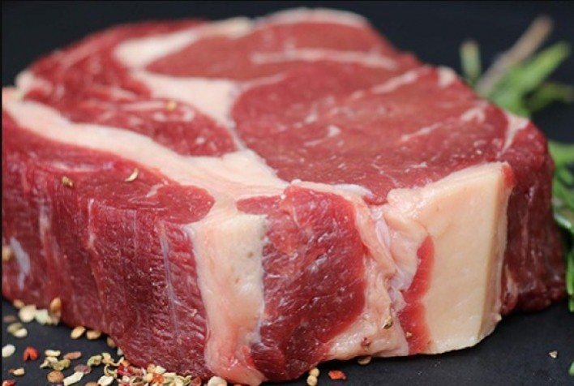
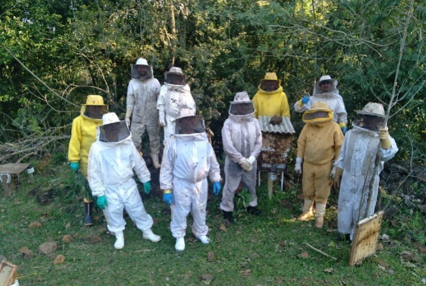

Plataforma digital que auxilia agricultores a aumentar a produtividade.
“Como aumentar a produtividade no campo” será apresentada por representante do PlantUP; solução desenvolvida pela ATTO Intelligence conta com mais de 17 milhões de hectares cadastrados

Proteínas Animais no radar do segundo trimestre de 2022
Relatório produzido pelo time de consultoria Agro do Itaú BBA, com os principais destaques e observações dos dados estratificados dos abates, produções de carnes, ovos e leite

Apicultores do oeste aperfeiçoam e ampliam a produção de mel
O objetivo foi aperfeiçoar ainda mais o conhecimento sobre novos métodos, tecnologias e manejos
Eventos
14º Congresso Brasileiro de Marketing e Agro apresenta campanhas positivas e responsáveis
Campanhas criativas fortalecem a imagem de atividades e tornam-se cases de sucesso, com marketing positivo e responsável. É o caso de Got Milk e Avocados From Mexico, ambas dos Estados Unidos, e Sou de Algodão, iniciativa da Associação Brasileira dos Produtores de Algodão, temas centrais do painel “Agregar Valor aos Produtos para Fortalecer os Produtores e o Agro”, do 14º Congresso Brasileiro de Marketing e Agro, no dia 14 de setembro, das 8h às 18h, no Blue Tree Transatlântico – Av. Cecilia Lothemberg, 130, em São Paulo (SP).
Sobre Nós
GestAgro 360° é um portal voltado à divulgação de notícias relacionadas direta ou indiretamente à gestão do agronegócio no Brasil, de empresas e cooperativas agropecuárias e também de fornecedores do setor.
Indicadores, resultados, novidades tecnológicas, ferramentas de gestão, pesquisas, novidades que impactam na produtividade do setor e eventos são assuntos presentes neste espaço, sempre tendo o objetivo de fazer um giro pelo agronegócio.